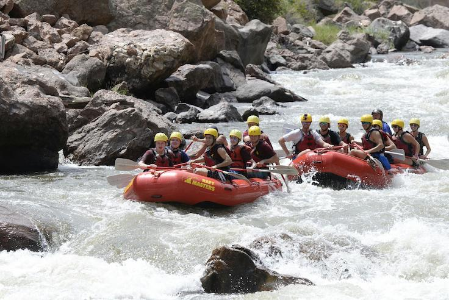
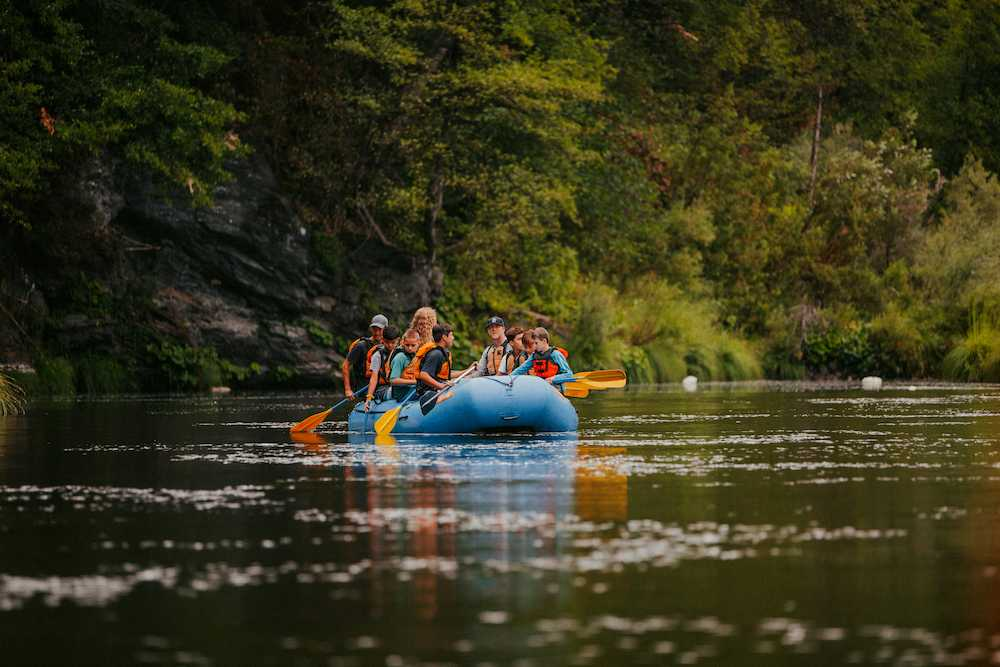
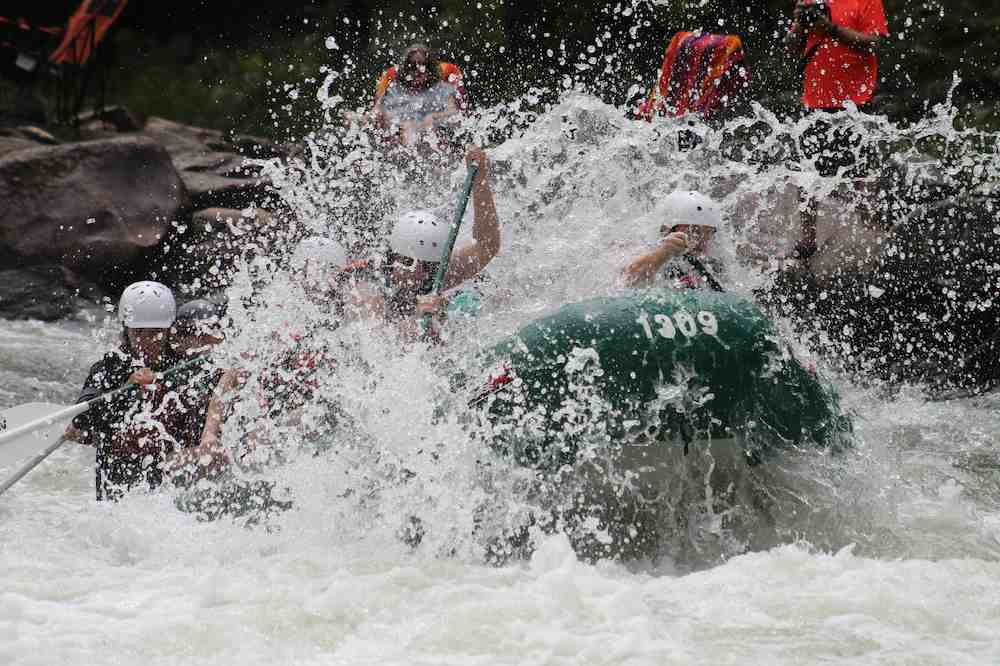

Colorado River Adventure
Explore the thrilling rapids of the famous Colorado River. This 3-day rafting adventure takes you through breathtaking landscapes and impressive canyons in the heart of Colorado. Perfect for those seeking an intermediate experience with a touch of challenge.
Grand Canyon Expedition
Enjoy an unforgettable expedition in the Grand Canyon, Arizona. This 3-day trip offers a perfect blend of exciting rapids and stunning scenery. Get ready to navigate the mighty waters of the Colorado River and camp under a starry sky at the bottom of the canyon.
Gauley River Challenge
Conquer the wild waters of the Gauley River in West Virginia. This 3-day trip is perfect for thrill-seekers and offers an advanced-level rafting experience. Enjoy the adrenaline rush of world-class rapids while taking in the natural beauty of the region.
Contact Us
Now
| Trip | Local | Date | Available spots |
|---|---|---|---|
| Colorado River Adventure | Colorado, USA | June 10-12, 2025 | 12 |
| Grand Canyon Expedition | Arizona, USA | July 5-7, 2025 | 15 |
| Gauley River Challenge | West Virginia, USA | August 20-22, 2025 | 10 |
| Salmon River Journey | Idaho, USA | September 12-14, 2025 | 8 |
| Chattooga River Thrills | Georgia, USA | October 3-5, 2025 | 20 |
| American River Rapids | California, USA | November 15-17, 2025 | 9 |